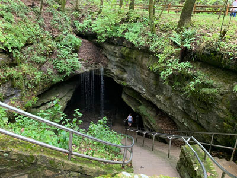

Southern travel itineraries immerse visitors in a region defined by music, food, history, and hospitality. From Texas ranchlands and Oklahoma prairies to Louisiana’s vibrant culture, Tennessee’s musical legacy, Kentucky’s horse country, and the historic landscapes of Alabama and Mississippi, these journeys reveal the heart and soul of the American South.


-400.jpg)

South Itineraries by State
-400.jpg)
PortableNYCTours, CC BY-SA 4.0, via Wikimedia Commons; Image Size Adjusted
.jpg){kind=link}
Birmingham 2 Day Itinerary
Birmingham, the "Magic City" set in Alabama's Appalachian foothills, blends industrial heritage, mountaintop views, world-class museums, and pivotal Civil Rights landmarks into one of the South's most powerful stories.

Anthony Quintano from Hillsborough, NJ, United States, CC BY 2.0, via Wikimedia Commons; Image Size Adjusted
.jpg){kind=link}
Montgomery 2 Day Itinerary
Alabama's capital brings American history alive at every corner, with churches, museums, memorials, and preserved neighborhoods tracing the Civil War, the Civil Rights Movement, and the ongoing pursuit of justice.

bryan..., CC BY-SA 2.0, via Wikimedia Commons; Image Size Adjusted
.jpg){kind=link}
Northern Alabama 4 Day Itinerary
North Alabama pairs America's space program with Appalachian foothills, canyon scenery, waterfalls, wildlife refuges, and Native American heritage across Huntsville, the northeastern mountains, Little River Canyon, and the Shoals.
Hot Springs National Park 1 Day Itinerary
Hot Springs is the oldest park area in the National Park System, with grand Gilded Age bathhouses on Bathhouse Row. This one-day plan walks the springs and bathhouses, then climbs to the mountain tower.

Rhododendrites, CC BY-SA 4.0, via Wikimedia Commons; Image Size Adjusted
.jpg){kind=link}
Northwest Arkansas 4 Day Itinerary
Northwest Arkansas blends world-class museums, lively college towns, historic frontier sites, and Ozark Mountain scenery across Bentonville, Fayetteville, Devil's Den State Park, and Victorian Eureka Springs.
.jpg){kind=link}
Lexington Area 5 Day Itinerary
Lexington and Kentucky's Bluegrass region reward visitors with rolling horse farms, historic estates, and scenic nature preserves, from championship thoroughbreds and pioneer history to towering sandstone arches and hidden river gorges.

Jdforrester, CC BY 4.0, via Wikimedia Commons; Image Size Adjusted

Louisville 3 Day Itinerary
Louisville sits at the crossroads of Southern hospitality, bourbon culture, and sporting tradition, pairing Churchill Downs and Whiskey Row with riverfront entertainment districts, Victorian neighborhoods, and celebrated museums.

National Park Service, Public domain, via Wikimedia Commons; Image Size Adjusted

Mammoth Cave National Park 1 Day Itinerary
Mammoth Cave is the world's longest known cave system, with over 420 miles surveyed. This one-day plan pairs two ranger-led cave tours with a short surface walk and a ride on the Green River Ferry.

Jean-Christophe BENOIST, CC BY 3.0, via Wikimedia Commons; Image Size Adjusted

Cajun Country 3 Day Itinerary
Across Louisiana's bayous, swamps, and prairies, Cajun Country weaves Acadian, Creole, and Native American traditions into living-history museums, scenic state parks, and authentic communities defined by music, food, and hospitality.

Ajay Suresh from New York, NY, USA, CC BY 2.0, via Wikimedia Commons; Image Size Adjusted
.jpg){kind=link}
New Orleans 3 Day Itinerary
New Orleans blends French, Spanish, African, Caribbean, and American influences into a city of street music, historic architecture, and celebrated food, from the French Quarter and Garden District to world-class museums and oak-filled parks.
-400.jpg)
ajay_suresh, CC BY 2.0, via Wikimedia Commons; Image Size Adjusted
.jpg){kind=link}
New Orleans 5 Day Itinerary
Unfolding like a jazz composition, this five-day journey explores New Orleans' iconic neighborhoods, historic landmarks, and scenic parks, from the French Quarter and City Park to Garden District mansions and above-ground cemeteries, with optional swamp and plantation excursions.

Misterweiss at English Wikipedia, Public domain, via Wikimedia Commons; Image Size Adjusted

Jackson 1 Day Itinerary
Mississippi's capital stands at the intersection of politics, civil rights, science, art, and culture, with downtown museums and historic landmarks giving way to parks, gardens, and memorials to the north.

Hypnotoad78, CC BY-SA 4.0, via Wikimedia Commons; Image Size Adjusted

Mississippi Delta 2 Day Itinerary
Stretching between the Mississippi River and the state's central hills, the Delta is the birthplace of the blues, home to legendary music venues, historic museums, antebellum landmarks, and Civil War history from Clarksdale to Vicksburg.

Natchez 1 Day Itinerary
Perched on bluffs above the Mississippi River, Natchez preserves an extraordinary collection of antebellum mansions, churches, and historic sites spanning Native American earthworks, European settlement, and the Civil War.
_(51395759113)-400.jpg)
ajay_suresh, CC BY 2.0, via Wikimedia Commons; Image Size Adjusted
_(51395759113).jpg){kind=link}
Oxford Tupelo 2 Day Itinerary
Northern Mississippi joins Oxford's oak-lined streets and William Faulkner legacy with Tupelo's birthplace of Elvis Presley, Civil War sites, and the scenic Natchez Trace Parkway.
-400.jpg)
Ingfbruno, CC BY-SA 3.0, via Wikimedia Commons; Image Size Adjusted
.jpg){kind=link}
Oklahoma City 2 Day Itinerary
Oklahoma City blends frontier history, Native American culture, and modern attractions with nationally recognized museums and memorials, vibrant entertainment districts, and scenic urban parks.

PumpkinSky, CC BY-SA 3.0, via Wikimedia Commons; Image Size Adjusted

Chattanooga 2 Day Itinerary
Set between the Tennessee River and the Appalachian foothills, Chattanooga pairs a revitalized riverfront and arts districts with Civil War history, engineering marvels, and the legendary attractions of Lookout Mountain.

Jean-Christophe BENOIST, CC BY 3.0, via Wikimedia Commons; Image Size Adjusted

Memphis 3 Day Itinerary
Memphis is a city where music changed the world, joining the studios and streets that launched blues, soul, and rock 'n' roll with a powerful civil rights heritage, riverfront parks, and landmarks like Beale Street and Graceland.

Saggittarius A, CC BY-SA 4.0, via Wikimedia Commons; Image Size Adjusted

Nashville 3 Day Itinerary
Shaped by river trade, gospel hymns, and civic ambition as much as honky-tonks, Nashville unfolds from its historic downtown into creative neighborhoods, cultural institutions, and quiet green spaces.

NBCUniversal, CC BY 3.0, via Wikimedia Commons; Image Size Adjusted
Tennessee Great Smoky Mountains Gatlinburg Pigeon Forge 5 Day Itinerary
This five-day adventure explores the Great Smoky Mountains of Tennessee, balancing the family attractions of Gatlinburg and Pigeon Forge with the mist-covered peaks, historic communities, waterfalls, and scenic overlooks of the national park.

Amarillo Area 3 Day Itinerary
Rising from the Texas Panhandle plains, the Amarillo area combines red-rock canyons, ancient geological formations, free-roaming bison, and legendary Route 66 culture into some of the Southwest's most underrated scenery.

Basil D Soufi, CC BY-SA 3.0, via Wikimedia Commons; Image Size Adjusted
.jpg){kind=link}
Austin 3 Day Itinerary
Austin blends outdoor adventure, historic landmarks, and live music into one of America's most vibrant cities, from spring-fed swimming holes and scenic trails to the famous sunset bat emergence and legendary nightlife.

MusikAnimal, CC BY-SA 4.0, via Wikimedia Commons; Image Size Adjusted

Big Bend National Park 3 Day Itinerary
Remote and untamed, Big Bend National Park spans more than 800,000 acres along the Rio Grande, combining the Chisos Mountains, dramatic river canyons, historic ranches, volcanic formations, and some of North America's darkest night skies.

Corpus Christi South Padre Island 4 Day Itinerary
Along the southern Texas coast, this route links Corpus Christi's bays and waterfront attractions with the wild shoreline of Padre Island National Seashore and the tropical atmosphere of South Padre Island.

Sam valadi, CC BY 2.0, via Wikimedia Commons; Image Size Adjusted

Dallas Fort Worth 3 Day Itinerary
Dallas and Fort Worth offer complementary experiences, pairing Dallas's modern architecture, history, and urban neighborhoods with Fort Worth's cowboy heritage and world-class museums, from Dealey Plaza to legendary cattle drives.

PortableNYCTours, CC BY-SA 4.0, via Wikimedia Commons; Image Size Adjusted
.jpg){kind=link}
El Paso 2 Day Itinerary
Set between the Franklin Mountains and the Rio Grande, El Paso blends rugged desert landscapes, borderland culture, and influences from both the United States and Mexico, from mountain vistas and ancient rock art to historic theaters.

Guadalupe Mountains National Park 3 Day Itinerary
Rising above the Chihuahuan Desert, Guadalupe Mountains National Park protects the world's most extensive exposed fossil reef, secluded canyons, high-elevation forests, and the four highest peaks in Texas.

Jeff P from Berkeley, CA, USA, CC BY 2.0, via Wikimedia Commons; Image Size Adjusted
.jpg){kind=link}
Houston Galveston 3 Day Itinerary
Houston and Galveston combine world-class museums, space exploration, and urban parks with historic landmarks and Gulf Coast scenery, from spacecraft that shaped human exploration to Galveston's beaches and historic waterfront.
Matias Garabedian from Montreal, Canada, CC BY-SA 2.0, via Wikimedia Commons; Image Size Adjusted
.jpg){kind=link}
San Antonio 2 Day Itinerary
One of the most historic cities in Texas, San Antonio brings together Spanish colonial heritage, Texas independence, and modern culture along the San Antonio River, from the Alamo and River Walk to the UNESCO-listed missions.

Epicgenius, CC BY-SA 4.0, via Wikimedia Commons; Image Size Adjusted

Texas Hill Country 3 Day Itinerary
The Texas Hill Country pairs rolling hills, historic German settlements, scenic rivers, and granite domes with charming small towns, anchored around Fredericksburg, Johnson City, Gruene, and New Braunfels.

Great Smoky Mountains National Park 4 Day Itinerary
Straddling Tennessee and North Carolina, Great Smoky Mountains National Park protects mist-shrouded peaks, tumbling waterfalls, historic settlements, and one of the world's most biologically diverse landscapes along its iconic roads and overlooks.
Overview
The South covers Alabama, Arkansas, Kentucky, Louisiana, Mississippi, Oklahoma, Tennessee, and Texas, a region known for music, food, and history. Nashville and Memphis anchor country and blues, New Orleans offers Creole and Cajun culture, and Texas cities like Austin, Houston, and San Antonio each have their own character.
Outdoor highlights include Great Smoky Mountains, Mammoth Cave, Hot Springs, Big Bend, and Guadalupe Mountains National Parks. The Mississippi Delta, Natchez, and civil rights sites in Birmingham and Montgomery add important chapters of American history.
Summers are hot and humid across most of the region, so spring and fall are usually the most comfortable seasons. Hurricanes can affect the Gulf Coast in late summer and early fall, so check forecasts when planning coastal trips.